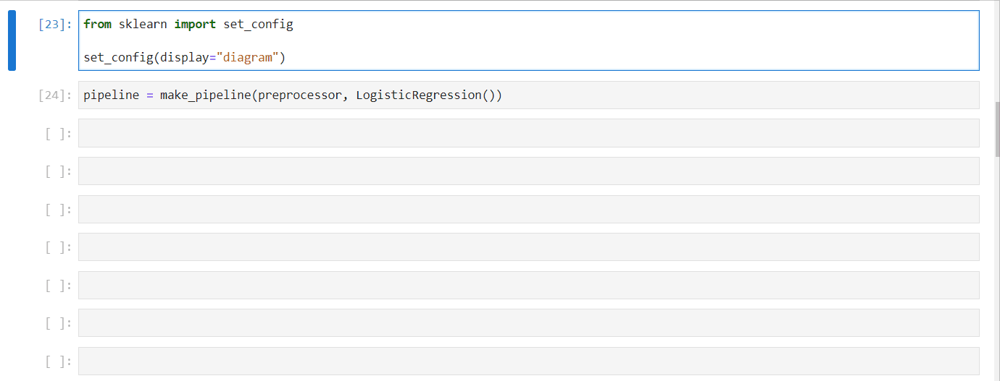

Sklearn - neat tricks
Contents
4.2. Sklearn - neat tricks#
4.2.1. make_pipeline and make_column_transformer - shorter pipelines#
When your Sklearn pipeline is finished, it can become quite humongous and unreadable.
Using make_pipeline and make_column_transformer can collapse all those into a few lines👇:
4.2.2. Function and class transformer for custom preprocessing steps#
Sklearn transformers and pipelines are powerful. They make preprocessing data much easier. But Sklearn doesn’t implement transformers for all preprocessing scenarios.
What if you need to include a custom feature engineering step? Or use a custom algorithm to encode categorical values? If you can’t add these steps to your pipeline, the whole idea of atomic, flat pipelines break down.
Fortunately, Sklearn provides classes like FunctionTransform to convert any preprocessing function to an Sklearn estimator and pass it into a pipeline.
4.2.3. Choose columns automatically with make_column_selector#
Sklearn has an automatic column selector - make_column_selector.
It can filter columns by including or excluding numeric/categorical data types or it accepts a regex string if you want to capture more complex patterns.
Sklearn solutions are always more elegant.
4.2.4. Logistic Regression on multi-class problems?#
Ever wondered why logistic regression works on multi-class problems even though it is strictly binary classification algorithm?
There are three methods to modify logistic regression so that it works on mutli-class problems as well:
One-vs-rest (OVR) or one-vs-all (OVA) When logistic regression is used with OVR or OVA approaches on a multi-class case, the problem is divided into N binary classification problems.
If there are three classes (a, b, c), three LogReg models will be fit on a vs. not a, b vs. not b and c vs. not c problems. The results will be averaged (simple or weighted averages) to calculate a membership probability.
One-vs-one (OVO) In this approach, n-class multi-class problem is divided into n*(n-1)/2 binary classification problems. The results are averaged in the same manner. This is the less popular approach as it is computation-heavy when you have many classes in the target.
Multinomial logistic regression By changing the loss function from log loss to cross-entropy loss, we get a multinomial logistic regression model that can calculate membership probabilities to all classes in the target. This is the default in Sklearn.
4.2.5. ConfusionMatrix display for better confusion matrix#
If you want much more control over how you display your confusion matrix in Sklearn, use ConfusionMatrixDisplay class.
With the class, you can control how X and Y labels look, what texts they display, the colormap of the matrix and much more.
Besides, it has a from_estimator function that enables you to plot the matrix without having to generate predictions beforehand.
4.2.6. Text representation of a decision tree#
Sklearn allows you to print a text representation of a decision tree. Here is an example👇
After taking a minute reading the output, you can easily build a prediction path for any sample in your dataset:
4.2.7. Default RMSE in Sklearn#
I always found it strange that Room Mean Squared Error wasn’t available in Sklearn given that it was such a popular metric.
Later, I found that I didn’t look long enough because it was available as a parameter inside mean_squared_error (squared=False)👇
4.2.8. Plotting decision trees in Sklearn#
Decision trees are everywhere. It has many variations with applications - CART boosted tree in XGBoost, regular and extremely random trees of Sklearn, trees of IsolationForest for outlier detection, etc.
So, it is crucial that you understand how they work. One way you can do this is by visualizing them via Sklearn:
4.2.9. Rule of thumb for fit/predict/fit_transform#
Rules of thumb to differentiate between fit/transform/fit_transform functions of Sklearn.
All sklearn transformers (e.g. OneHotEncoder, StandardScaler) must be fitted to the training data. When the “fit” function is called, the transformers learn statistical properties of the features like mean, median, variance, quartiles, etc. That’s why any function that has “fit” in the name must be called on training data first.
The transform function behaves differently based on the estimator’s purpose. It is called only after the “fit” function is run because most “transform” functions need the information learned from “fit”. “transform” can be used on all sets as long as the “fit” function is called on training.
“fit_transform” should also be used only on training data. The only difference is that it simultaneously learns and transforms the statistical properties of the training features.
4.2.10. The difference between micro, macro, weighted averages#
What are the differences between micro, macro and weighted averages and why should you care?
In multi-class classification problems, models often compute a metric for each class. For example, in a 3-class problem, 3 precision scores are returned. We don’t care for three, we just need a single global metric. That’s where averaging methods come into play.
Macro average
This is a simple arithmetic mean. For example, if precision scores are 0.7, 0.8, 0.9, macro average would be their mean - 0.8.
Weighted average
This method takes into account the class imbalance as metrics for each class are multiplied by the proportion of that class. For example, if there are 100 samples (30, 45, 25 for each class respectively) and the precision scores are .7, .8, .9, the weighted average would be:
0.3 * 0.7 + 0.45 * 0.8 + 0.25 * 0.9 = 0.795
Micro average
Micro average is the same as accuracy - it is calculated by dividing the number of all correctly classified samples (true positives) by the total number of correctly and incorrectly (true positives + false positives) classified samples of each class.
You should avoid micro average when you have an imbalanced problem. Instead, use macro if you don’t care much for class contributions or weighted average when you do.
4.2.11. Getting a scorer object from just the name#
In a single project, you may evaluate your models using multiple metrics. Instead of importing them one by one from sklearn and pollute your namespace, you can use the “get_scorer” function of the metrics module.
Just pass the name of the metric you want and you get a scorer object ready to use👇
4.2.12. Get all scorer’s names in Sklearn#
Sklearn has over 50 metrics to evaluate the performance of its models. To pass those metrics inside pipelines or GridSearch instances, you have to remember their text names.
If you forget any of them, here is how you can print out the names of all the metrics👇
4.2.13. Displaying ROC Curve without generating predictions#
Can you spell out ROC curve without looking it up? If yes, don’t flatter yourself, because a lot of people can😁.
But not a lot of people know that you can draw the ROC curve without even generating predictions. Just use the RocCurveDisplay class and its from_estimator method👇
4.2.14. HTML representation of an Sklearn pipeline#
You can get an interactive HTML representation of your Sklearn pipeline right inside a notebook.
Just import set_config function from Sklearn and set display to “diagram”👇

4.2.15. Displaying Precision/Recall curve without generating predictions#
Area under the Precision/Recall curve is one of the best metrics to evaluate the performance of models in imbalanced classification problems.
Precision measures the percentage of true predictions (true positives / (true positives + false positives)).
Recall is the same as sensitivity (true positives / (true positives + false negatives)).
In an imbalanced problem, we are interested in correctly classifying as much of the minority class (positive class or 1) as possible - i.e. true positives. As both the above metrics focus on true positives and don’t care about correctly classifying the majority class (true negatives), they are one of the best metrics in this context.
By varying the decision threshold of the classifier and plotting precision and recall for each threshold, we get a Precision/Recall curve.
A perfect classifier for an imbalanced problem would have area of 1.
Below is how you can plot the curve in the easiest way possible in Sklearn👇
4.2.16. Group KFold#
What is a Group KFold cross validation and when should you use it? Hint: non-IID data.
Traditional CV techniques like KFold are all designed for IID data - independent and identically distributed. In other words, the process that generates each row of the dataset does not have a memory of the past samples.
But, what if the data is non-IID?
For example, in the Google Brain Ventilator Pressure competiton on Kaggle, participants worked with a simulated dataset of lung pressure of sedated patients connected to a breathing pump.
Each row records several physical attributes of lungs as oxygen goes in and out. So, each “breath” of oxygen into the lungs has over 50 rows of measurements with a timestamp.
Here, we can’t use plain-old KFold because the dataset is grouped into thousands of breaths and each breath has more than 50 records. Using KFold has the danger of cutting the dataset “mid-breath”.
As a solution, you can use a CV technique called GroupKFold which accepts an additional “groups” argument that tells the estimator where the group IDs are stored in the dataset.
For the lungs dataset, the “groups” argument would accept the “breath_id” column.
Below is an example of GroupKFold in Sklearn.
To learn more about such CV techniques, you can check out my latest article: https://bit.ly/3z5e02c
4.2.17. Shuffle CV#
How can you flirt with the idea of cross validation and yet, still not do it? Hint: Use ShuffleSplit.
ShuffleSplit is an Sklearn CV estimator that does the following:
It accepts an integer for its n_splits argument and each time, returns shuffled versions of the dataset with custom training/test set proportions.
It is a great alternative to KFold CV because it allows a finer control on the number of folds and samples on in train/test sets. It is also a better choice than KFold for when you have limited data.
To learn more about such CV techniques, you can check out my latest article: https://bit.ly/3z5e02c